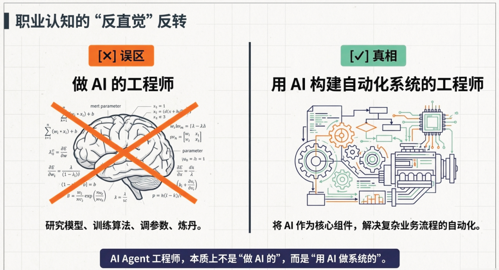
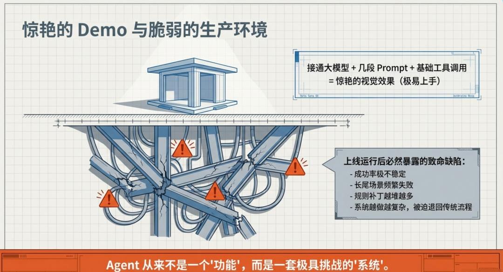
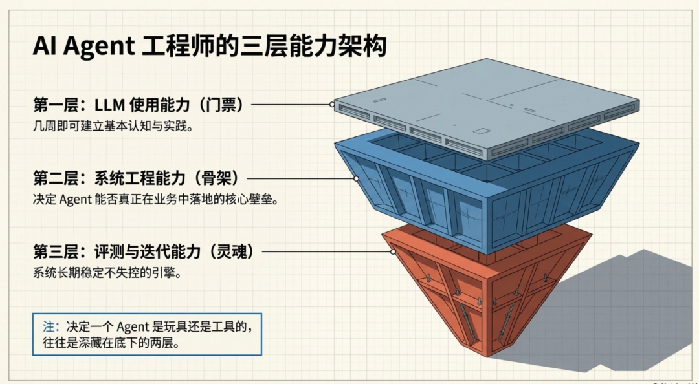
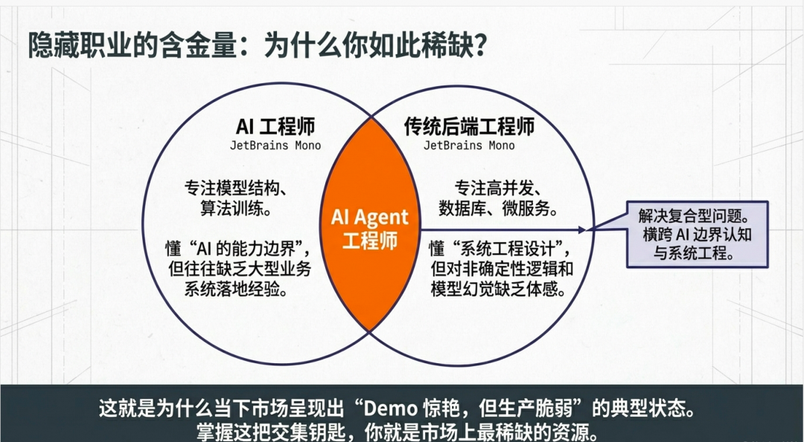
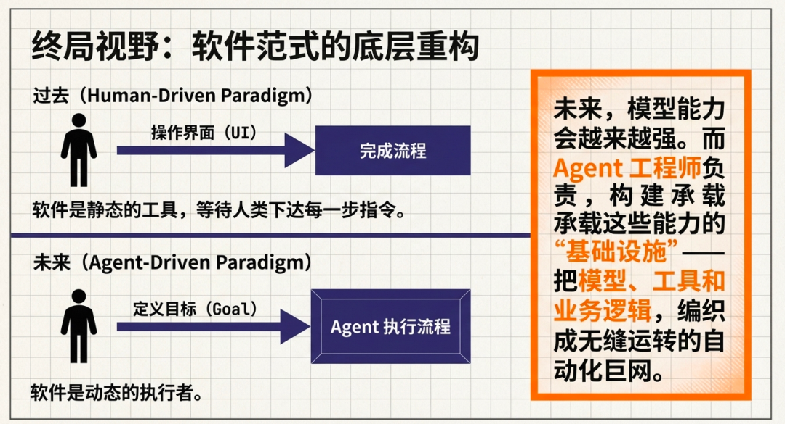
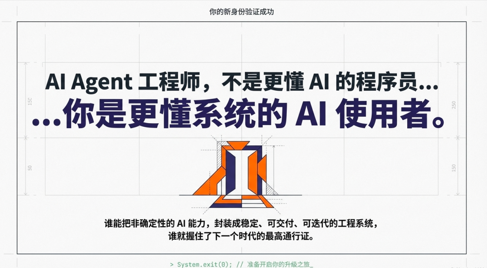

传统程序员转型的路径与能力结构 · 15 min
做了 8 年 Java 的后端
岗位改成「AI Native 工程师」
传统开发会过时吗？
而是用 AI 构建自动化系统的工程师 — 拼的是系统下限，不是模型上限

接大模型 · 几项工具 · 一套 Prompt · 交互界面
成功率不稳 · 长尾失败 · 补丁越堆越多 · 退回传统流程

Tool Orchestration
State Management
Permission Boundary
Observability
Evaluation
Feedback Loop
模型越强，没有护栏只会把错误放大得更快

Prompt · tool calling · structured output · RAG · context · Skills
任务怎么拆 · 状态怎么存 · 失败怎么重试 · 何时人审 · 权限与成本 · 链路观测
错误样本回流 · 关键路径回放
prompt 与策略变更可验证
给概率系统加护栏


后端工程师的幂等 · 监控 · 权限经验 — 在 Agent 时代更值钱
不是「更懂 AI 的程序员」
而是更懂系统的 AI 使用者

Q & A